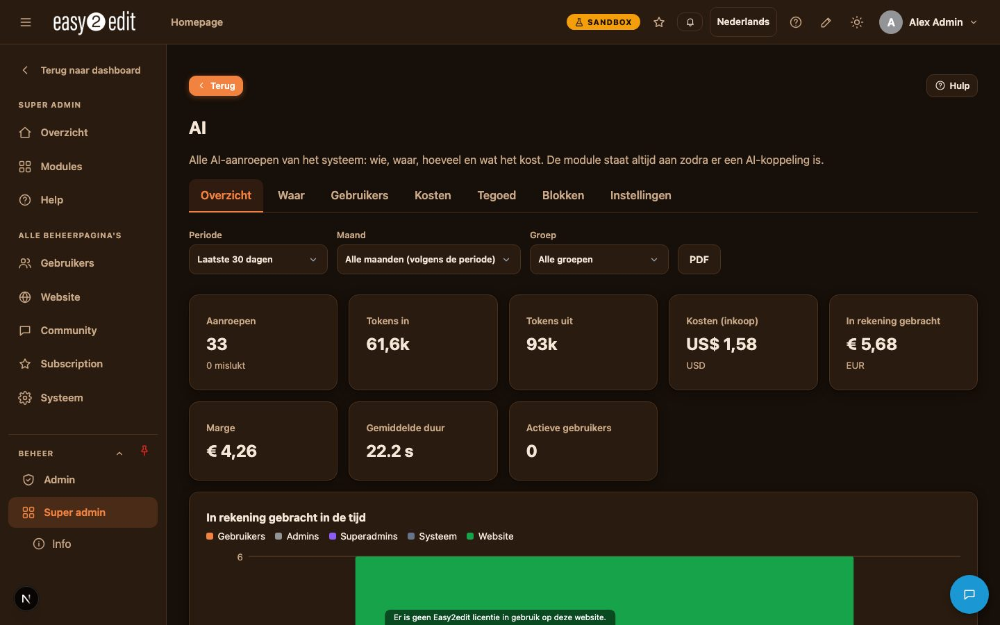
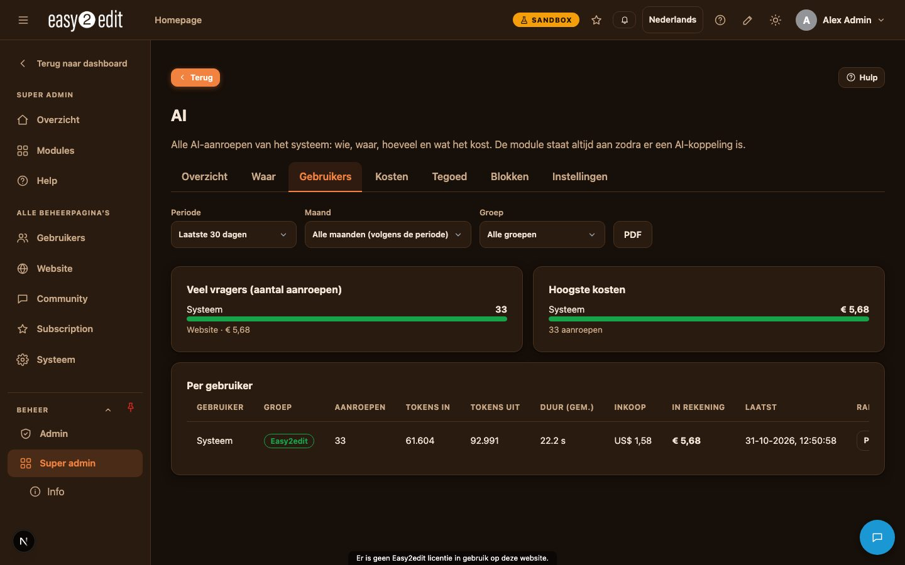
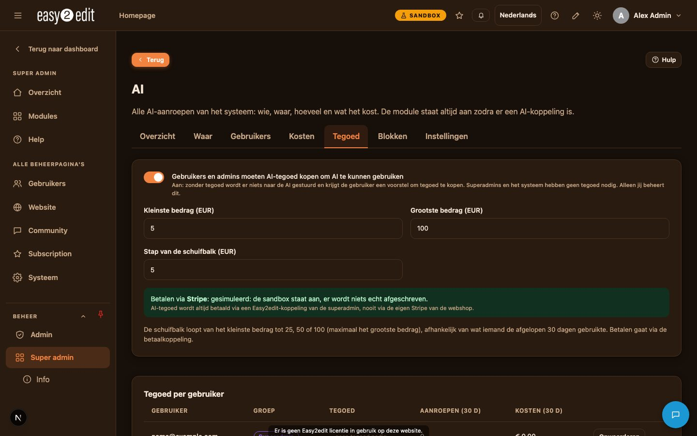
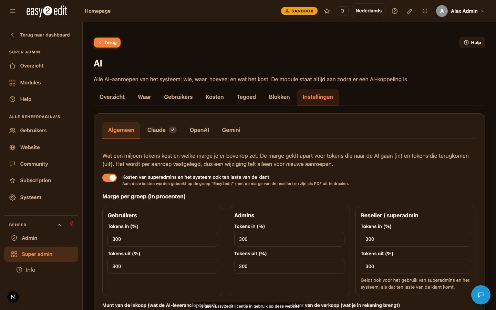
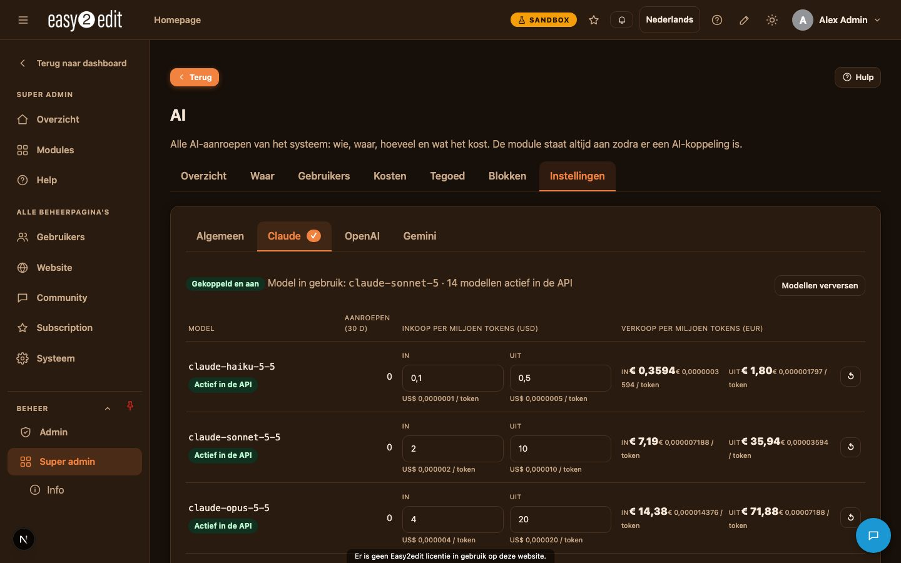
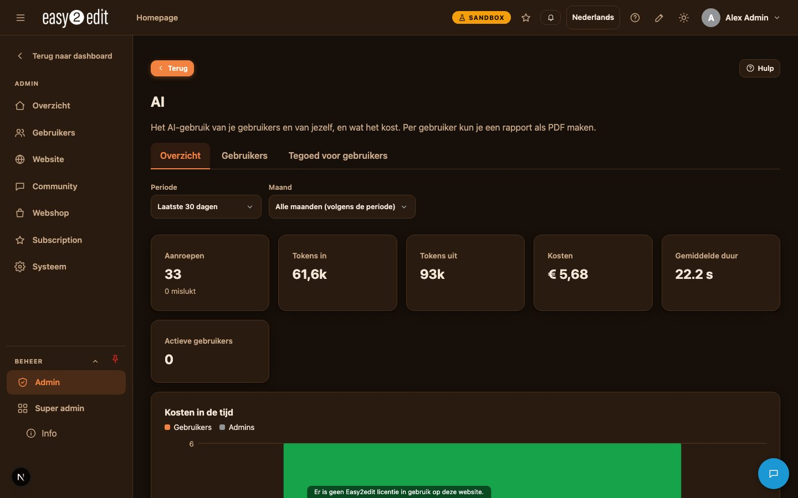
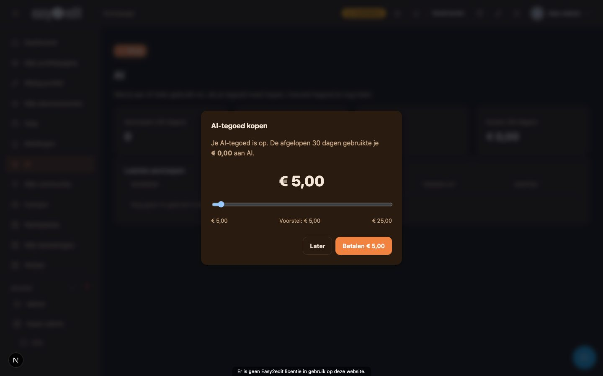

10. AI en AI-tegoed
easy2edit gebruikt kunstmatige intelligentie (Claude, van Anthropic) door het hele systeem heen om te helpen bij taken zoals het vertalen van content, het schrijven van paginateksten, het importeren van websites, het opzoeken van prijzen en meer. Elke aanroep naar de AI wordt tot in detail gelogd, zodat gebruik en kosten volledig transparant en controleerbaar blijven.
Video: AI en AI-tegoed (Nederlandse voice-over ook in English)

Wat wordt bijgehouden#
Voor elke AI-aanroep registreert het systeem:
- Wie de aanvraag deed (een gebruiker, een admin, een superadmin, of het systeem zelf)
- Vanuit welk onderdeel van het systeem de aanroep kwam
- Welk AI-model is gebruikt
- Het aantal verzonden en ontvangen tokens
- Hoe lang de aanroep duurde
- Of het gelukt is
- Wat het heeft gekost
Deze informatie voedt het AI-dashboard, dat superadmins volledig inzicht geeft in gebruikspatronen en uitgaven.

De AI-module en AI-koppelingen#
De AI-module is een kernmodule. Ze wordt automatisch ingeschakeld zodra er een AI-koppeling (een API-sleutel) is geïnstalleerd en ingeschakeld onder Admin > API-sleutels.
Een koppeling kan worden gemarkeerd als een Superadmin-koppeling. In dat geval kunnen alleen superadmins deze zien of wijzigen. Dit wordt bijvoorbeeld gebruikt voor de easy2edit AI-koppeling en de Stripe-koppeling van de reseller.
AI-aanroepen van gebruikers en admins lopen altijd via een easy2edit-koppeling van de superadmin, wanneer die beschikbaar is.

Het Super admin AI-dashboard#
Super admin > AI biedt superadmins een volledig dashboard met de volgende tabbladen:
- Overzicht: kerncijfers, kosten over tijd per groep, aandeel van de kosten per groep, en de laatst gemaakte aanroepen
- Waar: waar AI het meest wordt gebruikt, wat het meest kost, welke taken en modellen erbij betrokken zijn, en drukke uren en dagen van de week
- Gebruikers: zware gebruikers, hoogste kosten, en een tabel per gebruiker met een PDF-knop op elke regel
- Kosten: kosten uitgesplitst per maand of week, per groep en per gebruiker
- Tegoed: beheer van AI-tegoed
- Blokken: dashboardblokken die op pagina's geplaatst kunnen worden
- Instellingen: prijzen, marges en bijbehorende configuratie
Het dashboard kan gefilterd worden op periode, op maand (de huidige maand plus de voorgaande twaalf), en op groep. De PDF-knop genereert een samenvattend rapport, of, wanneer 'Gedetailleerd' is geselecteerd, een volledige lijst van elke aanroep inclusief tokens in en uit, duur en kosten.

Kosten, prijzen en marges#
Superadmins beheren inkoopprijzen per miljoen tokens voor elk model, georganiseerd in tabbladen voor Claude, OpenAI en Gemini, waarbij alleen de modellen worden getoond die momenteel actief zijn in de API. De knop 'Modellen verversen' zoekt bovendien actuele prijzen rechtstreeks op bij de AI-provider.
Inkoopprijzen worden ingesteld in de inkoopvaluta (bijvoorbeeld USD), terwijl verkoopprijzen worden ingesteld in de verkoopvaluta (bijvoorbeeld EUR), met een wisselkoers die bijgewerkt kan worden via een knop die de AI raadpleegt.
Er kunnen drie aparte marges worden ingesteld, elk uitgedrukt als percentage, en elk opgesplitst in tokens in en tokens uit:
- Gebruikers
- Admins
- Reseller/superadmin
Een schakelaar bepaalt of gebruik door superadmins en het systeem ook aan de klant wordt doorberekend. Wanneer deze aan staat, wordt dit gebruik geboekt op een groep die naar de website is vernoemd, met de resellermarge. Wanneer deze uit staat, wordt het gezien als een kostenpost voor de reseller zonder marge, en apart getoond.
Prijzen, wisselkoers en marges worden opgeslagen bij elke individuele aanroep, zodat latere wijzigingen in de instellingen alleen van invloed zijn op nieuwe aanroepen, nooit op eerdere.
Alleen superadmins kunnen deze systeembrede AI-instellingen wijzigen.

AI-tegoed#
Standaard moeten gebruikers en admins eerst AI-tegoed aanschaffen voordat ze AI-functies kunnen gebruiken. Deze eis is een schakelaar die standaard aan staat. Superadmins en het systeem zelf hebben nooit tegoed nodig.
Voor elke AI-aanroep schat het systeem de kosten in en controleert het deze tegen het beschikbare tegoed. Als er onvoldoende tegoed is, wordt er niets verzonden en verschijnt er een melding die uitlegt wat er nodig is.
Nadat de aanroep is voltooid, worden de werkelijke kosten afgeschreven van het tegoedsaldo.
Wanneer het tegoed van een gebruiker bijna op is, verschijnt er een pop-up met een schuifregelaar. De minimale stap is gebaseerd op het werkelijke gebruik over de afgelopen 30 dagen (25, 50 of 100), samen met een voorgesteld bedrag.
Betalen gebeurt altijd via Stripe, met een easy2edit-koppeling van de superadmin. De eigen Stripe-shop van de website wordt hiervoor nooit gebruikt. Tegoed wordt toegevoegd zodra de betaling is bevestigd; dit gebeurt wanneer de klant terugkeert van de betaalpagina en opnieuw wanneer het AI-scherm wordt geopend.
Superadmins stellen de beschikbare oplaadbedragen in en kunnen handmatig tegoed toevoegen of afschrijven voor elke gebruiker, via Super admin > AI > Tegoed.
Elke admin ziet bij de eerste keer inloggen een welkomstpop-up die uitlegt hoe AI en AI-tegoed werken.
Op een computer waar de sandboxmodus aan staat, wordt AI-tegoed nooit betaald met een echte betaling. In plaats daarvan wordt een gesimuleerde betaalpagina gebruikt.
Elke standaardinstallatie heeft een tabblad AI dat laat zien:
- Of AI beschikbaar is voor deze installatie
- Of tegoed verplicht is
- Het kleinste en grootste toegestane oplaadbedrag

Wat admins kunnen zien en beheren#
Admin > AI toont het gebruik door gebruikers en admins voor die installatie. Het toont geen inkoopprijzen, marges of resellerkosten. De startpagina van de admin bevat ook een blok 'AI-gebruik' met het eigen tegoedsaldo van de admin.
Dit gedeelte bevat een tabel per gebruiker en een PDF-rapport per gebruiker, zonder inkoopprijzen.
Om deze informatie te kunnen zien, heeft een admin het recht 'Bekijken AI-gebruik van gebruikers' nodig, toegekend via Rollen.

Admins met hun eigen AI- en Stripe-koppeling#
Een admin die een eigen AI-koppeling (Anthropic) en een eigen Stripe-koppeling heeft geconfigureerd, waarvan geen van beide is gemarkeerd als superadmin-koppeling, kan via Admin > AI > Tegoed voor gebruikers een eigen tegoedsysteem voor zijn gebruikers inschakelen.
In dat geval:
- Gebruiken de gebruikers van deze admin de eigen AI-koppeling van de admin
- Lopen betalingen via het eigen Stripe-account van de admin
- Komt de marge toe aan de admin
De admin stelt de tegoedregels, de oplaadbedragen en de marge in, en kan naar wens tegoed toevoegen aan individuele gebruikers.
AI-blokken op pagina's#
Verschillende onderdelen van het AI-dashboard kunnen worden omgezet in herbruikbare blokken: kerncijfers, kosten over tijd, gebruik per groep, waar AI wordt gebruikt, zware gebruikers, hoogste kosten, modellen, en drukke uren.
Deze blokken worden als systeemobjecten ingeschakeld via Super admin > AI > Blokken, en kunnen daarna op elke pagina worden geplaatst terwijl je in de bewerkmodus werkt. Alleen superadmins kunnen de cijfers zien die in deze blokken worden getoond.